扉页
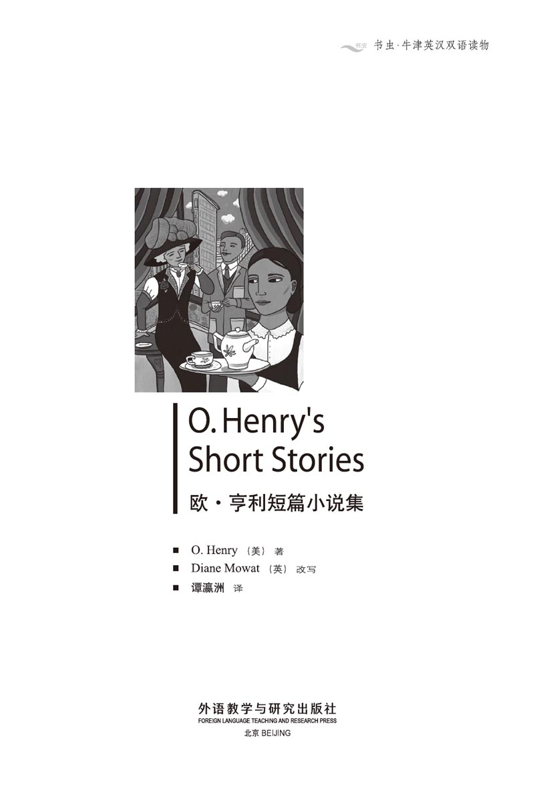
版权页
京权图字：01-2006-3297
Originally published by Oxford University Press, Great Clarendon Street, Oxford. © 2000
This edition is licensed for sale in the People's Republic of China only and not for export therefrom.
'Oxford' is a registered trademark of Oxford University Press.
只限中华人民共和国境内销售，不包括香港特别行政区、澳门特别行政区及台湾省。不得出口。
图书在版编目（CIP）数据
欧·亨利短篇小说集 = O. Henry's Short Stories／（美）亨利（Henry, O.）著；（英）莫厄特（Mowat, D.）改写；谭瀛洲译．—北京：外语教学与研究出版社，2007.7（2014.9重印
（书虫·牛津英汉双语读物）
ISBN 978-7-5600-6821-3
Ⅰ．欧… Ⅱ．①亨…②莫…③谭… Ⅲ．①英语—语言读物②短篇小说—作品集—美国—近代 Ⅳ．H319.4:I
中国版本图书馆CIP数据核字（2007）第104931号
出版人： 蔡剑峰
责任编辑：余 军
封面设计：孙莉明
出版发行：外语教学与研究出版社
社 址：北京市西三环北路19号（100089）
网 址：http://www.fltrp.com
版 次：2007年8月第1版
书 号：ISBN 978-7-5600-6821-3
* * *
凡侵权、盗版书籍线索，请联系我社法律事务部
举报电话：（010）88817519 电子邮箱：banquan@fltrp.com
法律顾问：立方律师事务所 刘旭东律师
中咨律师事务所 殷 斌律师
内容简介
内容简介
是什么使一座城市异于另一座城市呢？是建筑、气候还是人？城市是由人塑造成的，要想了解一个城市，就必须要了解那个城市的人，了解他们的喜与悲以及他们日常生活的点点滴滴。
20世纪初期，在纽约生活的是怎样一群人呢？现在的纽约人和一百年前有没有不同？岁月流逝，城市越来越大，新的建筑拔地而起，旧的建筑倒下，大大小小的汽车取代了马车，时尚也在变化，但人没有变。这些故事里的纽约人各不相同，但不论是流浪者还是律师，他们的希望同样重要；不论是女招待还是女演员，她们的爱情也同样动人。而且我们可以看到，尽管时光飞逝，人们的希望、担忧和梦想并没有改变。
O. Henry's Short Stories
O. Henry's Short Stories
What makes one city different from another city? Is it the buildings, the weather, the people? It is the people who make a city, and to know a city, you must know its people. You must know what makes them laugh and cry, know the small details of their everyday lives.
What kind of people lived in New York at the beginning of the twentieth century? Are New Yorkers different now from a hundred years ago? Cities grow bigger with the years, new buildings are put up and old buildings are pulled down, horses are replaced by cars and buses, fashions change. But people do not change. The New Yorkers in these stories are very different from each other, but the hopes of a tramp are as important as the hopes of a lawyer; the love of a waitress is as exciting as the love of an actress. And we see that people's hopes and fears and dreams do not change with the years.
目录
1. The Christmas Presents
1
The Christmas Presents
One dollar and eighty-seven cents. That was all. Every day, when she went to the shops, she spent very little money. She bought the cheapest meat, the cheapest vegetables. And when she was tired, she still walked round and round the shops to find the cheapest food. She saved every cent possible.
Della counted the money again. There was no mistake. One dollar and eighty-seven cents. That was all. And the next day was Christmas.
She couldn't do anything about it. She could only sit down and cry. So she sat there, in the poor little room, and she cried.
Della lived in this poor little room, in New York, with her husband, James Dillingham Young. They also had a bedroom, and a kitchen and a bathroom — all poor little rooms. James Dillingham Young was lucky, because he had a job, but it was not a good job. These rooms took most of his money. Della tried to find work, but times were bad, and there was no work for her. But when Mr James Dillingham Young came home to his rooms, Mrs James Dillingham Young called him 'Jim' and put her arms round him. And that was good.
Della stopped crying and she washed her face. She stood by the window, and looked out at a grey cat on a grey wall in the grey road. Tomorrow was Christmas Day, and she had only one dollar and eighty-seven cents to buy Jim a Christmas present. Her Jim. She wanted very much to buy him something really fine, something to show how much she loved him.
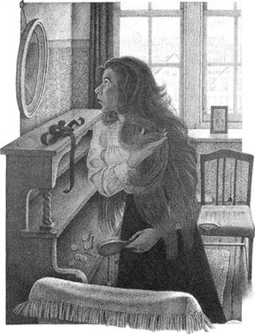
Suddenly, Della turned round and ran over to look in the glass on the wall. Her eyes were bright.
Now, the James Dillingham Youngs had two very special things. One was Jim's gold watch. It once belonged to his father, and, before that, to his grandfather. The other special thing was Della's hair.
Quickly, Della let down her beautiful, long hair. It fell down her back, and it was almost like a coat around her. Then she put her hair up again, quickly. For a second or two she stood still, and cried a little.
Then she put on her old brown coat, and her old brown hat, turned, and left the room. She went downstairs and out into the road, and her eyes were bright.
She walked along by the shops, and stopped when she came to a door with 'Madame Eloise — Hair' on it. Inside there was a fat woman. She did not look like an 'Eloise'.
'Will you buy my hair?' Della asked.
'I buy hair,' Madame replied. 'Take your hat off, then, and show me your hair.'
The beautiful brown hair fell down.
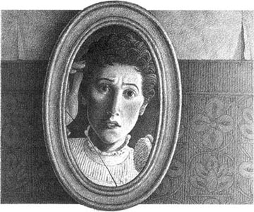
'Twenty dollars,' Madame said, and she touched the hair with her hand.
'Quick! Cut it off! Give me the money!' Della said. The next two hours went quickly. Della was happy because she was looking round the shops for Jim's present.
At last she found it. It was a gold chain for The Watch. Jim loved his watch, but it had no chain. When Della saw this gold chain, she knew immediately that it was right for Jim. She must have it.
The shop took twenty-one dollars from her for it, and she hurried home with the eighty-seven cents.
When she arrived there, she looked at her very short hair in the glass. 'What can I do with it?' she thought. For the next half an hour she was very busy.
Then she looked again in the glass. Her hair was now in very small curls all over her head. 'Oh, dear. I look like a schoolgirl!' she said to herself. 'What's Jim going to say when he sees me?'
At seven o'clock the dinner was nearly ready and Della was waiting. 'Oh, I hope he thinks that I'm still beautiful!' she thought.
The door opened and Jim came in and closed it. He looked very thin and he needed a new coat. His eyes were on Della. She could not understand the look on his face, and she was afraid. He was not angry or surprised. He just watched her, with that strange look on his face.
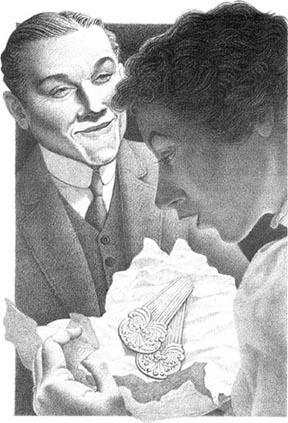
Della ran to him.
'Jim,' she cried. 'Don't look at me like that. I sold my hair because I wanted to give you a present. It will soon be long again. I had to do it, Jim. Say "Happy Christmas", please. I have a wonderful present for you!'
'You've cut off your hair?' asked Jim.
'Yes. I cut it off and sold it,' Della said. 'But don't you love me any more, Jim? I'm still me.'
Jim looked round the room.
'You say your hair has gone?' he said, almost stupidly.
'Yes. I told you. Because I love you! Shall I get the dinner now, Jim?'
Suddenly Jim put his arms round his Della. Then he took something from his pocket and put it on the table.
'I love you, Della,' he said. 'It doesn't matter if your hair is short or long. But if you open that, you'll see why I was unhappy at first.'
Excited, Della pulled off the paper. Then she gave a little scream of happiness. But a second later there were cries of unhappiness.
Because there were The Combs — the combs for her beautiful hair. When she first saw these combs in the shop window, she wanted them. They were beautiful combs, expensive combs, and now they were her combs. But she no longer had her hair!
Della picked them up and held them. Her eyes were full of love.
'But my hair will soon be long again, Jim.'
And then Della remembered. She jumped up and cried, 'Oh! Oh!' She ran to get Jim's beautiful present, and she held it out to him.
'Isn't it lovely, Jim? I looked everywhere for it. Now you'll want to look at your watch a hundred times a day. Give it to me! Give me your watch, Jim! Let's see it with its new chain.'
But Jim did not do this. He sat down, put his hands behind his head, and he smiled.
'Della,' he said. 'Let's keep our presents for a time. They're so nice. You see, I sold the watch to get the money to buy your combs. And now, let's have dinner.'
And this was the story of two young people who were very much in love.
cheap adj. low in price and good value for money 廉价的，便宜的
save v. to keep something for future use, not to spend 节省，储存
possible adj. that can exist, happen, or to be done 可能的
times n. a period of time 时期
special adj. not common, usual or general 特殊的，特别的
belong to to be the properly of somebody 属于
touch v. to press lightly with the hand 轻触，轻碰
chain n. a lot of very small metal rings joined together 链子
curl n. a little ring of hair 发卷
look n. the way of looking 表情
stupidly adv. foolishly 愚蠢地，傻乎乎地
scream n. a loud cry or noise 尖叫
comb n. a piece of metal or wood with long teeth which women use to put up their long hair 发梳
pick up to take something in the hand 拿起，拣起
lovely adj. very nice, beautiful 可爱的，漂亮的
圣诞礼物
1．圣诞礼物
1块8毛7分钱。就这么多。她每天去商店都尽量少花钱，买最便宜的肉、最便宜的蔬菜。即便是累了，她还是在商店里一圈又一圈地转悠，寻找最便宜的食品。已经是能省一分就省一分了。
德拉又把钱数了一遍。没错，就是1块8毛7分钱。就这些。可明天就是圣诞节了。
她无计可施，只有坐下来哭了。于是她坐了下来，在这破破烂烂的小屋子里哭了起来。
德拉和丈夫詹姆斯·迪林厄姆·扬住在纽约这所破烂的小屋子里。他们还有一间卧室、一间厨房和一个卫生间——都是又小又差的房间。詹姆斯·迪林厄姆·扬很幸运，因为他有一份工作，不过不是什么好工作。他挣的大部分钱都花在这所小屋子的租金上了。德拉努力地找过工作，但世道太糟，她没找到工作。不过每当詹姆斯·迪林厄姆·扬先生回家时，詹姆斯·迪林厄姆·扬太太都会叫他“吉姆”，并拥抱他。这还是幸福的。
德拉不哭了，洗了洗脸。她站在窗口望出去，灰色的路上有一堵灰色的墙，墙上有只灰色的猫。明天就是圣诞节了，可她只有1块8毛7分钱给吉姆买圣诞礼物。她的吉姆！她非常想给他买件不错的礼物，一件能代表她有多爱他的礼物。
突然，德拉转身跑到墙上的镜子前。她的眼前一亮。
詹姆斯·迪林厄姆·扬夫妇有两样非同寻常的东西。一样是吉姆的金表。那表过去属于他父亲，再之前是他祖父的。另一样就是德拉的头发。
德拉飞快地放下她那美丽的长发。长发滑落到背上，几乎像一件上衣一样裹着她。然后她又迅速地把头发挽起来。有那么一会儿，她愣愣地站在那儿。轻轻地哭泣。
然后她穿上了那件旧的棕色大衣，戴上了棕色的旧帽子，转身出了家门。她跑下楼去，来到街上，眼中闪着光。
她沿着商店一路走着，在一家门上写着“埃洛伊丝夫人——买卖头发”的店铺前停了下来。门里面有一个胖女人，看上去不像是“埃洛伊丝”。
“您买我的头发吗？”德拉问道。
“我买头发，”那位夫人回答道，“把帽子摘下来，让我看看你的头发。”
美丽的褐色长发垂落下来。
“20块钱。”夫人说，她摸了摸德拉的头发。
“快点！剪吧！把钱给我！”德拉说。接下来的两个小时过得太快了。德拉快乐地在商店里逛来逛去，给吉姆选礼物。
她终于找到了中意的礼物，那是一条金表链，正好配“那块表”。吉姆非常喜欢那块表，可是那表没有表链。德拉一看到这条金表链就觉得它配吉姆的表再合适不过了。她一定得把它买下来。
商店收了她21块钱，她带着剩下的8毛7分钱匆匆地回家了。
回家以后，她从镜子里打量着自己的短头发。“我该怎么打理一下呢？”她想。接下来的半个小时里，她忙成了一团。
然后她又照了照镜子。现在她满头都是小卷卷儿。“哦，天哪！我看上去像个小女生！”她自言自语道，“吉姆看到我会怎么说呢？”
7点钟，晚餐就快做好了，德拉等着吉姆回来。“哦，我希望他觉得我还是美丽的。”她想。
门开了，吉姆进来后，把门关上。他看上去非常瘦，而且需要一件新大衣。他的目光落在德拉身上。她弄不懂他的表情，有点怕了。他没生气，也不是吃惊，只是望着她，一脸古怪的神情。
德拉向他跑去。
“吉姆，”她大声说，“别这样看着我。我卖掉了头发，因为我想给你买件礼物。头发很快会再长起来的。我不得不这么做，吉姆。说‘圣诞快乐’吧，求你了。我给你准备了一样好得不得了的礼物！”
“你把头发剪啦？”吉姆问道。
“对，我把它剪了，卖了，”德拉说，“难道你不再爱我了吗，吉姆？我还是我呀。”
吉姆环视了一下屋子。
“你是说你的长头发没了？”他傻乎乎地说。
“是，我是这么说的。因为我爱你！现在我把晚饭端上来好吗，吉姆？”
突然间吉姆伸出手臂搂住了德拉。然后，他从口袋里掏出一样东西放在桌上。
“我爱你，德拉，”他说，“你的头发是长是短都没关系。可是你打开这个，就会明白我开始为什么不高兴了。”
德拉兴奋地拆开纸包。然后她快活地尖叫了一声，不过随后就难过地哭起来了。
因为纸包里是“那套梳子”——正好配她美丽长发的那套梳子。她在商店橱窗里第一次看到的时候就想要。那真是一套漂亮的梳子，贵重的梳子，现在是她的了。可她的长发已经没了！
德拉把梳子拿起来，捧在手里。她眼睛里满是柔情。
“可是我的头发很快会再长起来的，吉姆。”
然后德拉想起自己的礼物。她跳了起来，叫道：“哦，哦！”她跑去把给吉姆的漂亮礼物拿过来，递给他。
“好看吗，吉姆？我找遍了大街小巷才找到的。现在你一定想一天看一百次表了。给我，把你的表给我，吉姆！我们看看它配上新链子怎么样。”
但是吉姆没有给她。他坐下来，把手放在脑后，笑了起来。
“德拉，”他说，“我们把礼物搁一段时间吧。它们太珍贵了。你看，我卖了表，好拿钱给你买梳子。现在，我们吃饭吧。”
这就是两个彼此相爱的年轻人的故事。
2. Soapy's Choice
2
Soapy's Choice
Soapy sat on a seat in Madison Square, New York, and looked up at the sky. A dead leaf fell onto his arm. Winter was coming, and Soapy know that he must make his plans. He moved unhappily on his seat.
He wanted three months in a nice, warm prison, with food and good friends. This was how he usually spent his winters. And now it was time, because, at night on his seat in the square, three newspapers did not keep out the cold.
So Soapy decided to go to prison, and at once began to try his first plan. It was usually easy. He ate dinner in an expensive restaurant. Then he told them he had no money and they called a policeman. Nice and easy, with no trouble.
So Soapy left his seat, and walked slowly along the street. Soon he came to a bright restaurant on Broadway. Ah! This was all right. He just had to get to a table in the restaurant and sit down. That was all, because, when he sat down, people could only see his coat and his shirt, which were not very old. Nobody could see his trousers. He thought about the meal—not too expensive, but good.
But when Soapy went into the restaurant, the waiter saw Soapy's dirty old trousers and terrible shoes.
Strong hands turned him round and helped him out into the street again.
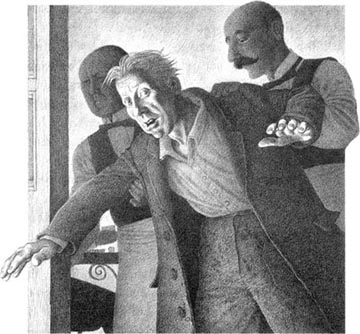
So now he had to think of something different. Soapy walked away from Broadway and soon he found himself on Sixth Avenue. He stopped in front of a shop window and looked at it. It was nice and bright, and everybody in the street could see him. Slowly and carefully he picked up a stone and threw it at the window. The glass broke with a loud noise. People ran round the corner and Soapy was happy, because the man in front was a policeman. Soapy did not move. He stood there with his hands in his pockets, and he smiled. 'I'll soon be in prison now,' he thought.
The policeman came up to Soapy, 'Who did that?' he asked.
'Perhaps I did,' Soapy replied.
But the policeman knew that people who break windows do not stop to talk to policemen. They run away. And just then the policeman saw another man, who was running to catch a bus. So the policeman ran after him. Soapy watched for a minute. Then he walked away. No luck again! He began to feel cross.
But on the opposite side of the road he saw a little restaurant. 'Ah, that'll be all right,' he thought, and he went in. This time nobody looked at his trousers and his shoes. He enjoyed his meal, and then he looked up at the waiter, smiled and said, 'I haven't got any money, you know. Now, call the police. And do it quickly, I'm tired!'
'No police for you!' the waiter answered. 'Hey! Jo!'
Another waiter came, and together they threw Soapy out into the cold street. Soapy lay there, very angry. With difficulty, he stood up. His nice warm prison was still far away, and Soapy was very unhappy. He felt worse because a policeman, who was standing near, laughed and walked away.
Soapy moved on, but he walked for a long time before he tried again. This time it looked easy.
A nice young woman was standing in front of a shop window. Not very far away there was also a policeman. Soapy moved nearer to the young woman. He saw that the policeman was watching him. Then he said to the young woman, with a smile, 'Why don't you come with me, my dear? I can give you a good time.'
The young woman moved away a little and looked more carefully into the shop window. Soapy looked at the policeman. Yes, he was still watching. Then he spoke to the young woman again. In a minute she would call the policeman. Soapy could almost see the prison doors. Suddenly, the young woman took hold of his arm.
'OK,' She said happily. 'If you buy me a drink. Let's go before that policeman sees us.'
And poor Soapy walked away with the young woman, who still held on to his arm. He was very unhappy.
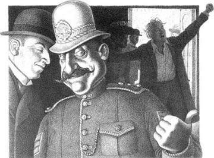
At the next corner he ran away from the woman. Suddenly he was afraid. 'I'm never going to get to prison,' he thought.
Slowly, he walked on and came to a street with a lot of theatres. There were a lot of people there, rich people in their best clothes. Soapy had to do something to get to prison. He did not want to spend another night on his seat in Madison Square. What could he do? Then he saw a policeman near him, so he began to sing and shout and make a lot of noise. This time they must send him to prison. But the policeman turned his back to Soapy and said to a man who was standing near, 'He's had too much to drink, but he's not dangerous. We'll leave him alone tonight.'
What was the matter with the police? Soapy was really unhappy now, but he stopped making a noise. How could he get to prison? The wind was cold, and he pulled his thin coat around him.
But, just then, inside a shop, he saw a man with an expensive umbrella. The man put his umbrella down near the door, and took out a cigarette. Soapy went into the shop, picked up the umbrella, and, slowly, he began to walk away. The man came quickly after him. 'That's my umbrella,' he said.
'Oh, is it?' Soapy replied. 'Then why don't you call a policeman? I took it, and you say it's your umbrella. Go on, then. Call a policeman! Look! There's one on the corner.'
The umbrella man looked unhappy. 'Well, you know, perhaps I've made a mistake. I took it from a restaurant this morning. If it's yours, well, I'm very sorry...'
'Of course it's my umbrella,' Soapy said.
The policeman looked at them—and the umbrella man walked away. The policeman went to help a beautiful young girl to cross the road.
Soapy was really angry now. He threw the umbrella away and said many bad things about policemen. Just because he wanted to go to prison, they did not want to send him there. He could do nothing wrong!
He began to walk back to Madison Square and home— his seat.
But on a quiet corner, Soapy suddenly stopped. Here, in the middle of the city, was a beautiful old church. Through one purple window he could see a soft light, and sweet music was coming from inside the church. The moon was high in the sky and everything was quiet. For a few seconds it was like a country church and Soapy remembered other, happier days. He thought of the days when he had a mother, and friends, and beautiful things in his life.
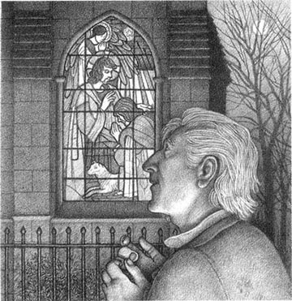
Then he thought about his life now—the empty days, the dead plans. And then a wonderful thing happened. Soapy decided to change his life and be a new man. 'Tomorrow,' he said to himself, 'I'll go into town and find work. My life will be good again. I'll be somebody important. Everything will be different. I'll...'
Soapy felt a hand on his arm. He jumped and looked round quickly—into the face of a policeman!
'What are you doing here?' asked the policeman.
'Nothing,' Soapy answered.
'Then come with me,' the policeman said.
'Three months in prison,' they told Soapy the next day.
prison n. a place where people are kept locked up as a punishment 监狱
keep out not to expose somebody to something 挡住
waiter n. a man who works in a restaurant and brings food to the table 服务员
avenue n. a wide street lined with trees or tall buildings 大街，大道
throw v. to move your arm quickly to send something through the air 扔，抛
cross adj. rather angry 恼怒的
difficulty n. trouble or effort 困难，难度
almost adv. nearly 几乎，差不多
take hold of to take somebody or something in the hands 抓住，握住
run away from to escape from somebody or place 从某人处／某处逃走
dangerous adj. likely to cause danger 危险的
umbrella n. a cover on a stick that you hold over you to keep the rain off 伞
cigarette n. a roll of tobacco enclosed in thin paper for smoking 香烟
soft adj. restful and pleasant to the senses, esp. the eyes （感觉，尤指视觉上） 柔和的
empty adj. lacking emotion, interest, or purpose 空虚的
dead adj. no longer considered likely to be successful 失败的
索比的选择
2．索比的选择
索比坐在纽约麦迪逊广场的长椅上，望着天空。一片枯叶落在他手臂上。冬天来了，索比知道一定得早作打算了。他满腹不快地在长椅上辗转反侧。
他想找一个温暖宜人的监狱，有食物、有朋友的，去那儿过上三个月。他通常都是这么过冬的。现在又到时候了，因为入夜之后，他躺在广场的椅子上，三张报纸都已经抵挡不住寒意了。
因此索比决定进监狱，并且马上开始尝试第一套方案。通常都是很简单的。他去一家昂贵的餐馆吃上一顿，然后告诉人家自己一个钱都没有，他们就会叫警察来。妙极了，很简单，毫无问题。
于是，索比离开了长椅，慢慢地沿街走着。他很快到了百老汇大街上一家明亮的餐馆外。啊！这家还不错。他只要走进餐馆，找个桌子坐下，就好了。因为他一旦坐下，人家就只能看到他的外套和衬衫，这两样都不太旧。谁也看不到他的长裤。他想着美餐——不要太贵，可是要吃好。
可是索比走进餐馆时，服务员看见了他又脏又旧的长裤，还有破破烂烂的鞋子。
几只有力的大手把索比转了个圈儿，把他赶到了街上。
所以他还得想个别的招儿。索比走过百老汇大街，很快到了第六大道。他在一家商店外停下，看着橱窗。这儿明亮、整齐，而且街上人人都看得到他。他慢慢地、小心翼翼地捡起一块石头，照着橱窗砸去。一声巨响，玻璃碎了。人们绕过街角朝这边跑来，索比很高兴，因为跑在前面的就是一位警察。索比没有动。他站在那儿，手插在兜里，微笑着。“很快我就可以进监狱了。”他想。
警察走到索比面前问道：“谁干的？”
“也许是我。”索比回答说。
但是警察知道，砸了玻璃的人是不会等在那儿跟警察说话的。他们早跑了。就在这时，警察看到另一个人正跑着，想赶上一辆公共汽车。于是，警察就去追那个人了。索比看了一会儿，然后走开了。又不走运！他开始有点恼怒了。
不过，他在路对面看到了一家小餐馆。“啊，正好。”他想着便走了进去。这次没人看他的长裤和鞋子。他享用了晚餐，然后抬头看看服务员，微笑着说：“我一个钱也没有。明白吗？现在叫警察吧。快点儿，我累了！”
“不用叫警察！”服务员回答，“嘿！乔！”
又过来一个服务员，他们俩一起把索比扔了出去，丢在冰冷的街上。索比躺在那儿，气极了。他艰难地站了起来。他所期盼的那温暖宜人的监狱仍然遥不可及，索比沮丧极了。一个警察就站在近旁，可是他却大笑着走开了，这叫索比更为懊恼。
索比继续往前走去，但这一次他走了很久才去做再一次的尝试。这一次似乎很容易。
一位漂亮的年轻女人站在一家商店的橱窗前。离那儿不远的地方就有一个警察。索比朝那位年轻女人走近了一些。他看到警察在看着他。然后他笑咪咪地对那女人说：“跟我来吧，宝贝儿？我会叫你快活的。”
那年轻女人走开了一点儿，更认真地看着橱窗里面。索比瞧了瞧警察。没错，他还在往这边儿看。于是，他又去跟那年轻女人搭话。不消一分钟，她就会叫警察。索比几乎都看见监狱的大门了。突然，那年轻女人抱住了他的手臂。
“好啊，”她快活地说，“只要你给我买一杯喝的。我们走吧，别叫那警察看见。”
可怜的索比只好跟这个年轻女人走开了，她还抱着他的手臂不放。他感到难过极了。
到了下一个街角，他从那女人身边逃开了。刹那间，他害怕了。“我永远也进不了监狱了。”他想。
他慢慢地走着，来到一条有许多家剧院的街上。那儿有好多人，有钱人都穿着最好的衣服。索比一定得干点儿什么，好进监狱。他可不想在麦迪逊广场的长椅上再过一夜了。他能干点儿什么呢？他看到一个警察就在身边，所以开始大唱大叫，弄出许多声响来。这一次他们总得送他进监狱了吧。但是，警察背过身去，向站在近旁的一个男人说：“他喝多了，但不会有什么危险。今天晚上我们就不管他了。”
警察到底是怎么啦？索比现在真是沮丧透了。不过他不再闹腾了。怎么才能进监狱啊？风很冷，他裹紧了薄薄的外套。
但是，就在这时，他看到一家商店里有个男人拿着把昂贵的伞。那人把伞放在门口，取出一支香烟来。索比走进店里，拿起那把伞，而且，慢吞吞地，要走开了。那男人迅速跟过来。“那是我的伞。”他说。
“哦，是吗？”索比回答说，“那干吗不叫警察呢？我拿了这把伞，而且你说这是你的伞。那么去吧，叫警察来！看！街角那儿就有一个。”
伞的主人似乎很不安。“好吧，你知道，也许是我弄错了。我是今天早上从一家餐馆拿的这把伞。如果是你的，那么，我很抱歉……”
“这当然是我的伞。”索比说。
警察看着他们——伞的主人走开了。警察去帮助一位漂亮姑娘过马路去了。
索比现在恼怒至极。他把伞扔到一边，把警察骂了个够。就因为他想进监狱，而他们偏不想送他进去。他怎么都干不成坏事儿！
他开始走回麦迪逊广场——他的家——那把长椅。
但是在一个僻静的角落，索比突然停住了脚步。那儿，在城市的中心，有一座美丽的老教堂。透过一扇紫色的窗子，他看到一点柔和的光亮，教堂里传出悦耳的音乐。月亮高高地挂在天空，周遭一片宁静。有那么片刻的时间，这儿感觉很像一个乡村教堂，索比记起了从前的快乐时光。他想到过去那些日子，那时他有母亲，有朋友，还拥有生命里许多美好的东西。
然后他想到现在的生活——空虚的日子、失败的计划。于是，一件奇妙的事情发生了。索比决定改变生活，重新做人。“明天，”他对自己说，“我要进城找工作。我的生活会重新好起来的。我会成为大人物。一切都会不同。我要……”
索比感觉到一只手搭在他臂上。他跳了起来，迅速回头看去——看到了一张警察的脸！
“你在这儿干什么？”警察问道。
“什么也没干。”索比回答。
“那么跟我走吧。”警察说。
“监禁三个月。”第二天，他们对索比说。
3. A Walk in Amnesia
3
A Walk in Amnesia
That morning my wife and I said our usual goodbyes. She left her second cup of tea, and she followed me to the front door. She did this every day. She took from my coat a hair which was not there, and she told me to be careful. She always did this. I closed the door, and she went back to her tea.
I am a lawyer and I work very hard. My friend, Doctor Volney, told me not to work so hard. 'You'll be ill,' he said. 'A lot of people who work too hard get very tired, and suddenly they forget who they are. They can't remember anything. It's called amnesia. You need a change and a rest.'
'But I do rest,' I replied. 'On Thursday nights my wife and I play a game of cards, and on Sundays she reads me her weekly letter from her mother.'
That morning, when I was walking to work, I thought about Doctor Volney's words. I was feeling very well, and pleased with life.
When I woke up, I was on a train and feeling very uncomfortable after a long sleep. I sat back in my seat and I tried to think. After a long time, I said to myself, 'I must have a name!' I looked in my pockets. No letter. No papers. Nothing with my name on. But I found three thousand dollars. 'I must be someone,' I thought.
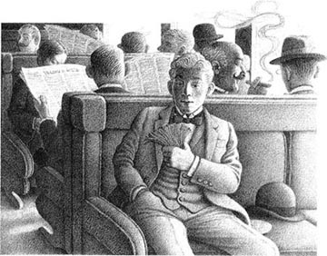
The train was crowded with men who were all very friendly. One of them came and sat next to me. 'Hi! My name's R. P. Bolder — Bolder and Son, from Missouri. You're going to the meeting in New York, of course? What's your name?'
I had to reply to him, so I said quickly, 'Edward Pinkhammer from Cornopolis, Kansas.'
He was reading a newspaper, but every few minutes he looked up from it, to talk to me. I understood from his conversation that he was a druggist, and he thought that I was a druggist, too.
'Are all these men druggists?' I asked.
'Yes, they are,' he answered. 'Like us, they're all going to the yearly meeting in New York.'
After a time, he held out his newspaper to me. 'Look at that,' he said. 'Here's another of those men who run away and then say that they have forgotten who they are. A man gets tired of his business and his family, and he wants to have a good time. He goes away somewhere and when they find him, he says that he doesn't know who he is, and that he can't remember anything.'
I took the paper and read this:
Denver, June 12th
Elwyn C. Bellford, an important lawyer in the town, left home three days ago and has not come back. Just before he left, he took out a lot of money from his bank. Nobody has seen him since that day. He is a quiet man who enjoys his work and is happily married. But Mr Bellford works very hard, and it is possible that he has amnesia.
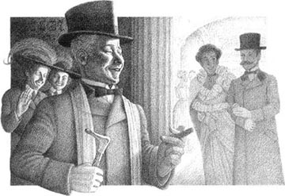
'But sometimes people do forget who they are, Mr Bolder,' I said.
'Oh, come on!' Mr Bolder answered. 'It's not true, you know! These men just want something more exciting in their lives—another woman, perhaps. Something different.'
We arrived in New York at about ten o'clock at night. I took a taxi to a hotel, and I wrote the name, 'Edward Pinkhammer', in the hotel book. Suddenly I felt wild and happy—I was free. A man without a name can do anything.
The young man behind the desk at the hotel looked at me a little strangely. I had no suitcase.
'I'm here for the Druggists' Meeting,' I said. 'My suitcase is lost.' I took out some money and gave it to him.
The next day I bought a suitcase and some clothes and I began to live the life of Edward Pinkhammer. I didn't try to remember who or what I was.
The next few days in Manhattan were wonderful—the theatres, the gardens, the music, the restaurants, the night life, the beautiful girls. And during this time I learned something very important—if you want to be happy, you must be free.
Sometimes I went to quiet, expensive restaurants with soft music. Sometimes I went on the river in boats full of noisy young men and their girlfriends. And then there was Broadway, with its theatres and bright lights.
One afternoon I was going back into my hotel when a fat man came and stood in front of me.
'Hello, Bellford!' he cried loudly. 'What are you doing in New York? Is Mrs B. with you?'
'I'm sorry, but you're making a mistake, sir,' I said coldly. 'My name is Pinkhammer. Please excuse me.'
The man moved away, in surprise, and I walked over to the desk. Behind me, the man said something about a telephone.
'Give me my bill,' I said to the man behind the desk, 'and bring down my suitcase in half an hour.'
That afternoon I moved to a quiet little hotel on Fifth Avenue.
One afternoon, in one of my favourite restaurants on Broadway, I was going to my table when somebody pulled my arm.
'Mr Bellford,' a sweet voice cried.
I turned quickly and saw a woman who was sitting alone. She was about thirty and she had very beautiful eyes.
'How can you walk past me like that?' she said. 'Didn't you know me?'
I sat down at her table. Her hair was a beautiful redgold colour.
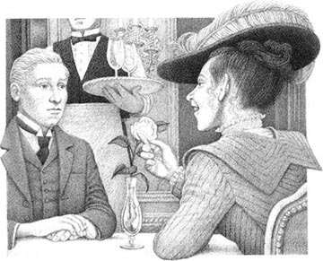
'Are you sure you know me?' I asked.
'No.' She smiled. 'I never really knew you.'
'Well, my name is Edward Pinkhammer,' I said, 'and I'm from Kansas.'
'So, you haven't brought Mrs Bellford with you, then,' she said, and she laughed. 'You haven't changed much in fifteen years, Elwyn.'
Her wonderful eyes looked carefully at my face.
'No,' she said quietly, 'you haven't forgotten. I told you that you could never forget.'
'I'm sorry,' I answered, 'but that's the trouble. I have forgotten. I've forgotten everything.'
She laughed. 'Did you know that I married six months after you did? It was in all the newspapers.' She was silent for a minute. Then she looked up at me again. 'Tell me one thing, Elwyn,' she said softly. 'Since that night fifteen years ago, can you touch, smell, or look at white roses—and not think of me?'
'I can only say that I don't remember any of this,' I said carefully. 'I'm very sorry.' I tried to look away from her.
She smiled and stood up to leave. Then she held out her hand to me, and I took it for a second. 'Oh yes, you remember,' she said, with a sweet, unhappy smile.
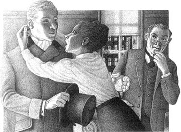
'Goodbye, Elwyn Bellford.'
That night I went to the theatre and when I returned to my hotel, a quiet man in dark clothes was waiting for me.
'Mr Pinkhammer,' he said, 'can I speak with you for a minute? There's a room here.'
I followed him into a small room. A man and a woman were there. The woman was still beautiful, but her face was unhappy and tired. I liked everything about her. The man, who was about forty, came to meet me.
'Bellford,' he said, 'I'm happy to see you again. I told you that you were working too hard. Now you can come home with us. You'll soon be all right.'
'My name', I said, 'is Edward Pinkhammer. I've never seen you before in my life.'
The woman cried out, 'Oh, Elwyn! Elwyn! I'm your wife!' She put her arms round me, but I pushed them away.
'Oh, Doctor Volney! What is the matter with him?' the woman cried.
'Go to your room,' the doctor said to her. 'He'll soon be well again.'
The woman left, and so did the man in the dark clothes. The man who was a doctor turned to me and said quietly, 'Listen. Your name is not Edward Pinkhammer.'
'I know that,' I replied, 'but a man must have a name. Why not Pinkhammer?'
'Your name', the doctor said, 'is Elwyn Bellford. You are one of the best lawyers in Denver—and that woman is your wife.'
'She's a very fine woman,' I said, after a minute. 'I love the colour of her hair.'
'She's a very good wife,' the doctor replied. 'When you left two weeks ago, she was very unhappy. Then we had a telephone call from a man who saw you in a hotel here.'
'I think I remember him,' I said. 'He called me "Bellford". Excuse me, but who are you?'
'I'm Bobby Volney. I've been your friend for twenty years, and your doctor for fifteen years. Elwyn, try to remember.'
'You say you're a doctor,' I said. 'How can I get better? Does amnesia go slowly or suddenly?'
'Sometimes slowly. Sometimes suddenly.'
'Will you help me, Doctor Volney?' I asked.
'Old friend,' he said, 'I'll do everything possible.'
'Very well. And if you're my doctor, you can't tell anybody what I say.'
'Of course not,' Doctor Volney answered.
I stood up. There were some white roses on the table. I went over to the table, picked up the roses and threw them far out of the window. Then I sat down again.
'I think it will be best, Bobby,' I said, 'to get better suddenly. I'm a little tired of it all now. Go and bring my wife Marian in now. But, oh, Doctor,' I said with a happy smile. 'Oh, my good old friend—it was wonderful!'
lawyer n. a person whose business is to advise people about laws and to represent them in court 律师
cards n. a set of 52 cards used to play games 扑克，纸牌
sit back to rest one's back in a comfortable chair 向后靠着坐
crowded adj. completely full 拥挤的
druggist n. a person who makes and sells medicines 药剂师
get tired of to have had enough of 对……感到厌烦
exciting adj. causing great interest 令人激动的，令人兴奋的
wild adj. full of strong feelings 兴奋的
alone adv. without any company 孤单地，独自地
soon adv. quickly 很快地
cry out to call out loudly in words 喊叫，呼喊
失忆症之旅
3．失忆症之旅
那天早上我太太和我照常说了再见。她丢下第二杯茶，随我到了大门口。她天天如此。她从我大衣上摘下一根头发——其实那儿并没头发——而且叮嘱我当心点儿。她老是这样。我关上门，她就回去喝她的茶了。
我是律师，工作非常勤奋。我的朋友沃尔尼医生告诉过我别那么卖命。“你会生病的，”他说，“好多人工作过于勤奋，都累坏了，突然之间就忘了自己是谁。他们什么都记不起来了。这叫失忆症。你需要点儿变化，休息一下。”
“可我是休息了呀，”我回答道，“每礼拜四晚上我太太和我打扑克牌，每个礼拜天她还给我读她妈妈每周写来的家信。”
那天早上，我走在上班的路上，想起了沃尔尼医生的话。我感觉良好，对生活很满意。
我醒来的时候，是在一列火车上，感觉睡了很久，非常不舒服。我靠坐在座位上，努力地思索着。想了很久，我对自己说：“我一定有名字的！”我看看口袋里，没有信，没有文件，没有任何写着我名字的东西。但我发现了3,000块钱。“我一定是什么人。”我想。
火车里挤满了人，都很友好。其中一个人挨着我坐下了：“嗨！我叫R.P.博尔德，博尔德父子公司的，从密苏里来。您是去纽约开那个会的，是吧？您叫什么名字？”
我不得不回答他，所以迅速地说道：“爱德华·平客哈默，从堪萨斯州的科诺伯利斯来。”
他在看报，不过每隔几分钟就抬头跟我说几句话。我从他的言谈中了解到，他是药剂师，并且认为我也是。
“这些人都是药剂师吗？”我问。
“对，都是，”他答道，“像我们一样．都是去纽约开那个年会的。”
过了一会儿，他把报纸递给我。“看看这个，”他说，“又有一个出走的人，说不记得自己是谁了。男人厌倦了工作和家庭，想过得快活点儿。他跑到某个地方去，人们找到他时，他说不知道自己是谁，什么都记不起来了。”
我接过报纸，读到了这一段：
丹佛，6月12日
埃尔温·C.贝尔福德，本城重要律师，三日前离家，至今未归。离家之前刚从银行提取大量现金。自当日起，无人再见过他。他生性安静，热爱工作，婚姻幸福。但是，贝尔福德先生工作过于勤奋，有可能患了失忆症。
“不过，有时候人是会忘掉自己是谁的，博尔德先生。”我说。
“啊，算了吧！”博尔德先生答道，“您要知道，不是这样的！这些男人不过是想给生活添点儿刺激——找别的女人什么的。找点儿不一样的东西。”
我们大约是晚上10点钟到了纽约。我乘出租车到了一家酒店，在登记簿上写下姓名“爱德华·平客哈默”。突然之间，我觉得激动又快活——我自由了。一个人连名字都没有，想干什么都成啊。
酒店前台的年轻人有点儿奇怪地看着我。我没有行李。
“我是来开‘药剂师大会’的，”我说，“我的行李丢了。”我拿出一些钱来交给他。
第二天，我买了个行李箱，还有一些衣物，开始以爱德华·平客哈默的名义生活。我并没有想法子去回忆自己到底是谁，是干什么的。
接下来在曼哈顿的一段日子真是妙极了——剧院、花园、音乐、餐馆、夜生活，还有漂亮姑娘。而且在这段时间里，我悟到了很重要的一点——要想快活，就得自由才行。
有时候我会去安静而豪华的餐馆，听听轻音乐。有时候我乘船在河上游玩，船上满是闹哄哄的带着女朋友的年轻人。再有就是会去百老汇，那里剧院众多，灯火通明。
一天下午，我刚回到酒店，一个胖胖的男人跑过来，在我面前站住了。
“您好，贝尔福德！”他大声叫道，“您在纽约干什么？贝尔福德太太跟您一起来了吗？”
“抱歉，您弄错了，先生，”我冷冷地说，“我叫平客哈默。请原谅。”
那人走开了，惊讶不已。我走到前台，那个人在我背后讲了些关于电话的事情。
“给我账单，”我对前台的人说，“半小时之内把我的行李取下来。”
那天下午我搬到了一家安静的小酒店，在第五大道上。
一天下午，在百老汇我最钟爱的一家餐馆里，当我往桌子那儿走的时候，有人拉住了我的手臂。
“贝尔福德先生。”一个甜美的声音叫道。
我迅速转过身来，看到一个女人独自坐着。她大约三十岁，长着一双美丽的眼睛。
“你怎么能就这么从我身边走过了呢？”她说，“不认识我了么？”
我在她的桌旁坐下。她的头发是美丽的红金色。
“您确信您认识我？”我问。
“不，”她微微一笑，“我从来不曾真的认识过你。”
“好吧，我叫爱德华·平客哈默，”我说，“我是堪萨斯人。”
“那么说，您没带贝尔福德太太一起来喽，”她说着笑了起来，“十五年了，你没怎么变呢，埃尔温。”
她那动人的眼睛仔细端详着我的脸。
“不，”她轻轻地说，“你没有忘。我跟你说过，你永远都忘不了的。”
“抱歉，”我答道，“不过问题在于，我已经忘了。我什么都忘掉了。”
她笑起来。“你知道吗？你结婚六个月之后我也结婚了。报上都登了。”她沉默了一分钟，然后又抬头看着我。“告诉我一件事，埃尔温，”她柔声说，“从十五年前的那个晚上之后，你能在触摸、闻到，或是看到白玫瑰时而不想到我吗？”
“我只能说我什么都记不得了，”我谨慎地说，“非常抱歉。”我努力不去看她。
她微笑着起身要走，然后伸出一只手给我，我握了一秒钟。“哦，是的，你想起来了。”她说，笑容甜美，殊无欢意。
“再见，埃尔温·贝尔福德。”
那天晚上我去看戏，回到酒店的时候，一位温和的黑衣男人在等我。
“平客哈默先生，”他说，“我能跟您谈一分钟吗？这边有个房间。”
我随他进了一个小房间。那儿有一男一女。女的依然很美，可是愁容满面，一脸疲惫。她周身上下我都喜欢。那位男的约有四十许，起来迎接我。
“贝尔福德，”他说，“我很高兴再次见到你。我跟你说过，你勤奋得过了头。现在你可以跟我们回家了。你很快会好起来的。”
“我的名字是爱德华·平客哈默。我有生以来从没见过你。”我说道。
那位女士喊道：“哦，埃尔温！埃尔温！我是你的妻子！”她伸出双臂搂住我，但我把她的手推开了。
“哦，沃尔尼医生！他这是怎么啦？”那女士叫道。
“您回房间去吧，”医生对她说，“他很快会好起来的。”
那位女士走了，黑衣男人也走了。那位医生转过身冲着我平静地说：“听着，你的名字不是爱德华·平客哈默。”
“我知道，”我回答说，“但是人总得有个名字。为什么不能叫平客哈默？”
“你的名字，”那医生说，“是埃尔温·贝尔福德。你是丹佛最好的律师之一——而那位女士是你的妻子。”
“她是个漂亮女人，”我停了一分钟说，“我喜欢她头发的颜色。”
“她是个好妻子，”医生回答说，“你两个礼拜前离开，她难过极了。后来我们接到一个电话，是一个男人打来的，说在此地的一家酒店看到了你。”
“我想我记得他，”我说，“他叫我‘贝尔福德’。请原谅，可你是谁？”
“我是博比·沃尔尼。我是你二十年的老朋友，给你当了十五年的医生。埃尔温，试着回忆一下吧。”
“你说你是医生，”我说，“我怎么才能好起来呢？失忆症是慢慢康复，还是突然好转的？”
“有时很慢，有时突然就好了。”
“沃尔尼医生，你会帮助我吗？”我问。
“老朋友，”他说。“我会竭尽全力的。”
“很好。而且如果你是我的医生，你不能把我的话告诉任何人。”
“当然不会。”沃尔尼医生答道。
我站了起来。桌上有些白玫瑰。我走到桌前，抄起玫瑰，从窗口远远地扔出去。然后我重新坐下来。
“我想最好是，博比，”我说，“突然好起来吧。现在我对这一切有点厌倦了。现在去叫我妻子玛丽安进来吧。不过，哦，医生，”我开心地笑着说，“啊，我的老朋友，这真是太妙了！”
4. Tildy's Moment
4
Tildy's Moment
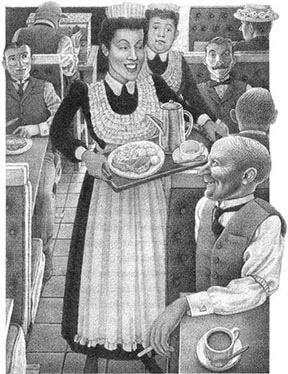
Bogle's Family Restaurant on Eighth Avenue is not a famous place, but if you need a large cheap meal, then Bogle's is the place for you. There are twelve tables in the room, six on each side. Bogle himself sits at the desk by the door and takes the money. There are also two waitresses and a Voice. The Voice comes from the kitchen.
At the time of my story, one of the waitresses was called Aileen. She was tall, beautiful and full of life. The name of the other waitress was Tildy. She was small, fat and was not beautiful.
Most of the people who came to eat at Bogle's were men, and they loved the beautiful Aileen. They were happy to wait a long time for their meals because they could look at her. Aileen knew how to hold a conversation with twelve people and work hard at the same time. And all the men wanted to take Aileen dancing or give her presents. One gave her a gold ring and one gave her a little dog.
And poor Tildy?
In the busy, noisy restaurant men's eyes did not follow Tildy. Nobody laughed and talked with her. Nobody asked her to go dancing, and nobody gave her presents. She was a good waitress, but when she stood by the tables, the men looked round her to see Aileen.
But Tildy was happy to work with no thanks, she was happy to see the men with Aileen, she was happy to know that the men loved Aileen. She was Aileen's friend. But deep inside, she, too, wanted a man to love her.
Tildy listened to all Aileen's stories. One day Aileen came in with a black eye. A man hit her because she did not want to kiss him. 'How wonderful to have a black eye for love!' Tildy thought.
One of the men who came to Bogle's was a young man called Mr Seeders. He was a small, thin man, and he worked in an office. He knew that Aileen was not interested in him, so he sat at one of Tildy's tables, said nothing, and ate his fish.
One day when Mr Seeders came in for his meal, he drank too much beer. He finished his fish, got up, put his arm round Tildy, kissed her loudly, and walked out of the restaurant.
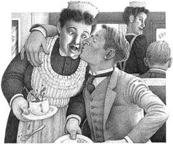
For a few seconds Tildy just stood there. Then Aileen said to her, 'Why, Tildy! You bad girl! I must watch you. I don't want to lose my men to you!'
Suddenly Tildy's world changed. She understood now that men could like her and want her as much as Aileen. She, Tildy, could have a love-life, too. Her eyes were bright, and her face was pink. She wanted to tell everybody her secret. When the restaurant was quiet, she went and stood by Bogle's desk.
'Do you know what a man in the restaurant did to me today?' she said. 'He put his arm round me and he kissed me!'
'Really!' Bogle answered. This was good for business. 'Next week you'll get a dollar a week more.'
And when, in the evening. the restaurant was busy again, Tildy put down the food on the tables and said quietly, 'Do you know what a man in the restaurant did to me today? He put his arm round me and kissed me!'
Some of the men in the restaurant were surprised; some of them said, 'Well done!' Men began to smile and say nice things to her. Tildy was very happy. Love was now possible in her grey life.
For two days Mr Seeders did not come again, and in that time Tildy was a different woman. She wore bright clothes, did her hair differently, and she looked taller and thinner. Now she was a real woman because someone loved her. She felt excited, and a little afraid. What would Mr Seeders do the next time he came in?
At four o'clock in the afternoon of the third day, Mr Seeders came in. There were no people at the tables, and Aileen and Tildy were working at the back of the restaurant. Mr Seeders walked up to them.
Tildy looked at him, and she could not speak. Mr Seeders' face was very red, and he looked uncomfortable.
'Miss Tildy,' he said, 'I want to say that I'm sorry for what I did to you a few days ago. It was the drink, you see. I didn't know what I was doing. I'm very sorry.'

And Mr Seeders left.
But Tildy ran into the kitchen, and she began to cry. She could not stop crying. She was no longer beautiful. No man loved her. No man wanted her. The kiss meant nothing to Mr Seeders. Tildy did not like him very much, but the kiss was important to her — and now there was nothing.
But she still had her friend, and Aileen put her arm round Tildy. Aileen did not really understand, but she said, 'Don't be unhappy, Tildy. That little Seeders has got a face like a dead potato! He's nothing. A real man never says sorry!'
waitress n. a woman who works in a restaurant and brings food to the table 女服务员
hit v. to strike with a blow 打
watch v. to look at, be careful about 看着，注意
secret n. fact that is not known by others 秘密
business n. buying and selling 买卖，生意
wear v. to have something on one's body 穿着
mean n. to represent or express (a meaning) 意味着
提尔蒂的一时风光
4．提尔蒂的一时风光
第八大道上的博格尔家庭餐馆不是什么有名的地方，不过如果您需要一顿份量十足的便宜饭菜，来这里就对了。店里有十二张桌子，一边六张。博格尔自己坐在门口的桌子那儿收钱。还有两个女服务员，一个“广播”，声音是从厨房传来的。
我这个故事发生的时候，那两个服务员有一个叫艾琳。她身材高挑，很漂亮，充满活力。另一个叫提尔蒂，矮个儿，胖乎乎的，不漂亮。
来博格尔餐馆吃饭的大多是男人，他们都爱漂亮的艾琳。虽然要等很久饭菜才上桌，可他们还是高高兴兴的，因为这样可以看艾琳。艾琳知道如何应付跟十二个人聊天儿，同时还能努力工作。所有的男人都想带艾琳去跳舞，或是送她礼物。有人送了她一枚金戒指，还有人送给她一只小狗。
不过可怜的提尔蒂呢？
在忙乱嘈杂的餐馆里，男人的眼睛可没跟着提尔蒂。没人冲她笑、跟她搭话。没人请她跳舞，也没人送她礼物。她做服务员是把好手，可是她站在男人桌边的时候，人家的眼睛总是绕过她去看艾琳。
不过提尔蒂听不到“谢谢”也干得挺高兴的。看到男人们和艾琳在一起，知道他们爱艾琳，她都挺高兴的。她是艾琳的朋友。不过在内心深处，她也渴望着有人来爱她。
提尔蒂听艾琳讲过所有的故事。一天，艾琳来上班的时候，有一边眼圈发黑。有个男人打了她，因为她不愿意吻他。“因为爱而挂上个黑眼圈，这多美妙啊！”提尔蒂想。
有个年轻人也常来博格尔餐馆，他叫席德斯。他个儿不高，瘦瘦的，在一家公司上班。他知道艾琳对他没意思，所以坐在了提尔蒂负责的桌子上，什么也不说，吃他的鱼。
一天，席德斯先生来吃饭的时候啤酒喝得太多了。他吃完那份鱼，站了起来，伸手搂住提尔蒂，响亮地吻了她一下，就走出了餐馆。
有那么几秒钟的时间，提尔蒂愣在那儿。然后艾琳对她说：“哎呀，提尔蒂！你这坏丫头！我该看着你的。我可不想让你抢了我的人！”
提尔蒂的世界突然间变了。她现在知道，也有男人喜欢她、想要她，就像对艾琳一样。她，提尔蒂，也会有爱情生活了。她眼睛发亮，脸颊红扑扑的。她想把自己的秘密告诉所有人。餐馆安静下来以后，她去站在了博格尔先生的桌前。
“您知道今天店里有个男人对我干了什么吗？”她说，“他搂住我，亲了我一下儿！”
“真的？”博格尔应道。这可对生意有好处。“下礼拜开始，你每个礼拜的工资加一块钱。”
到了晚上，餐馆又忙了起来。提尔蒂把饭菜送到桌上，总会悄悄地说：“您知道今天店里有个男人对我干了什么吗？他搂住我，亲了我一下儿！”
有些客人很惊讶；还有人说：“干得好！”男人们开始冲着她笑了，跟她说些甜言蜜语。提尔蒂快活极了。现在她灰色的生活里也有爱情了。
两天了，席德斯先生没有再来。不过这段时间里，提尔蒂完全换了个人。她穿上了鲜艳的衣服，换了发型，看上去也高了点儿、瘦了点儿。现在她成了真正的女人，因为有人爱她。她激动不已，还有点儿怕。席德斯先生下次来的时候，会干点儿什么呢？
第三天的下午4点钟，席德斯先生走了进来。还没人来吃饭，艾琳和提尔蒂都在餐馆后边儿干活儿。席德斯先生走到她们面前。
提尔蒂看看他，说不出话来。席德斯先生的脸红得厉害，似乎很不自在。
“提尔蒂小姐，”他说，“我想为几天前的事儿道个歉。您知道，那都是因为喝多了。我都不知道自己在干什么。很抱歉。”
然后，席德斯先生走了。
可是提尔蒂跑到厨房，哭了起来，哭得止不住。她不再漂亮了。没有男人爱她。没人想要她。那个吻对席德斯先生来说什么也不算。提尔蒂并不是那么喜欢他，但那个吻对她很重要——但现在什么都没了。
好在她还有朋友。艾琳搂着提尔蒂。艾琳不太明白究竟是怎么回事儿，可还是说：“别难过了，提尔蒂。席德斯那么矮，脸还像个干土豆！他算什么啊。真正的男人可从不说抱歉！”
5. The Memento
5
The Memento
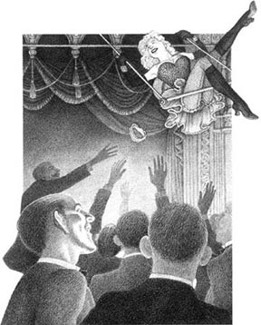
The window of Miss D'Armande's room looked out onto Broadway and its theatres. But Lynette D'Armande turned her chair round and sat with her back to Broadway. She was an actress, and needed the Broadway theatres, but Broadway did not need her.
She was staying in the Hotel Thalia. Actors go there to rest for the summer and then try to get work for the autumn when the little theatres open again. Miss D'Armande's room in this hotel was a small one, but in it there were many mementoes of her days in the theatre, and there were also pictures of some of her best friends. She looked at one of these pictures now, and smiled at it.
'I'd like to know where Lee is now,' she said to herself.
She was looking at a picture of Miss Rosalie Ray, a very beautiful young woman. In the picture, Miss Ray was wearing a very short skirt and she was sitting on a swing. Every night in the theatre she went high in the air on her swing, over the heads of all the people. When she did this, all the men in the theatre got very excited and stood up. This was because, when her long beautiful legs were high in the air, her yellow garter flew off and fell down to the men below. She did this every evening, and every evening a hundred hands went up to catch the garter. She did other things. She sang, she danced, but when she got onto her swing, all the men stood up. Miss Ray did not have to try very hard to find work in the theatre.
After two years of this, Miss D'Armande remembered, Miss Ray suddenly left the theatre and went to live in the country.
And seventeen minutes after Miss D'Armande said, 'I'd like to know where Lee is now', somebody knocked on the door.
It was, of course, Rosalie Ray.
'Come in,' Miss D'Armandc called, and Miss Ray came in. Yes, it was Rosalie. She took off her hat, and Miss D'Armande could see that she looked very tired and unhappy.
'I've got the room above you,' Rosalie said. 'They told me at the desk downstairs that you were here.'
'I've been here since the end of April,' Lynnette replied. 'I begin work again next week, out in a small town. But you left the theatre three months ago, Lee. Why are you here?'
'I'll tell you, Lynn, but give me a drink first.' Miss D'Armande passed a bottle to her friend.
'Ah, that's good!' said Rosalie. 'My first drink for three months.' Yes, Lynn, I left the theatre because I was tired of the life, and because I was tired of men—well, the men who come to the theatre. You know we have to fight them off all the time. They're animals! They ask you to go out with them, they buy you a drink or two—and then they think that they can do what they want! It's terrible! And we work hard, we get very little money for it, we wait to get to the top—and it never happens. But most of all, I left because of the men.
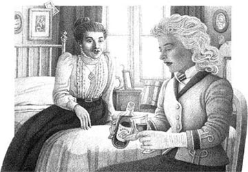
'Well, I saved two hundred dollars and when summer came, I left the theatre and went to a little village by the sea on Long Island. I planned to stay there for the summer, and then learn how to be a better actress.'
'But there was another person who was staying in the same house—the Reverend Arthur Lyle. Yes, Lynn, a man of the church! When I saw him for the first time, I fell in love with him at once. He was a fine man and he had a wonderful voice!
'Well, it's only a short story, Lynn. A month later we decided to marry. We planned to live in a little house near the church, with lots of flowers and animals.
'No, I didn't tell him that I was an actress. I wanted to forget it and to put that life behind me.
'Oh, I was happy! I went to church, I helped the women in the village. Arthur and I went for long walks— and that little village was the best place in the world. I wanted to live there for ever...
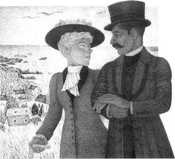
'But one morning, the old woman who worked in the house began to talk about Arthur. She thought that he was wonderful, too. But then she told me that Arthur was in love once before, and that it ended unhappily. She said that, in his desk, he kept a memento — something which belonged to the girl. Sometimes he took it out and looked at it. But she didn't know what it was — and his desk was locked.
'That afternoon I asked him about it.'
'"Ida," he said, (of course, I used my real name there) "it was before I knew you, and I never met her. It was different from my love for you."'
'"Was she beautiful?" I asked.
'"She was very beautiful," replied Arthur.
'"Did you see her often?"
'"About ten times," he said.
'"And this memento—did she send it to you?"
'"It came to me from her," he said.
'"Why did you never meet her?" I asked.
'"She was far above me," he answered. "But, Ida, it's finished. You're not angry, are you?"
'"Why, no. I love you ten times more than before." And I did, Lynn. Can you understand that? What a beautiful love that was! He never met her, never spoke to her, but he loved her, and wanted nothing from her. He was different from other men, I thought — a really good man!
'About four o'clock that afternoon, Arthur had to go out. The door of his room was open, his desk was unlocked, and I decided to look at this memento. I opened the desk and slowly I took out the box and opened it.'
'I took one look at that memento, and then I went to my room and packed my suitcase. My wonderful Arthur, this really good man, was no different from all the other men!'
'But, Lee, what was in the box?' Miss D'Armande asked.
'It was one of my yellow garters!' cried Miss Ray.
actress n. a woman who works in a theatre, and acts, sings or dances 女演员
swing n. a seat on the end of two long ropes, which moves backwards and forwards through the air 秋千
garter n. something worn by women round the top of the leg (not usually seen because it is under the skirt) 吊袜带
flow off to fall loosely and freely 松掉，滑下
country n. land away from town and cities 乡下，农村
knock n. to make a noise by striking something 敲
Reverend n. a name given to a man of the church 牧师（尊称）
fall in love with to begin to love somebody very much 爱上……
above prep. higher in position, importance, etc. 高于……
pack v. to put something into a suitcase 收拾（行李）
纪念品
5．纪念品
从达曼德小姐的房间望出去，就是百老汇和那里的众多剧院。可是琳内特·达曼德把椅子转过来，背朝百老汇坐着。她是演员，需要百老汇剧院这个舞台，可是百老汇不需要她。
她暂住在塔利亚酒店里。演员们都上这儿来歇夏，然后等秋季到了，小剧院重新开张，再去设法找工作。达曼德小姐在这儿住的房间不大，可有很多她在剧院时的纪念品，还有一些好朋友的照片。她现在正微笑地看着其中的一张照片。
“真想知道现在莉在哪儿。”她自言自语道。
她看的是罗莎莉·雷小姐的照片，她是个非常漂亮的年轻女人。照片里的雷小姐穿着一条极短的裙子，坐在秋千上。在剧院里时，她每天晚上都把秋千荡得高高的，飞过所有人的头顶。她荡秋千的时候，剧院里所有的男人都兴奋不已，站起身来。这是因为她漂亮的长腿会在空中飞得高高的，黄色的吊袜带也会松掉，落在底下的男人身上。她每天晚上都这么干，每天晚上都有上百双手举着去抓那吊袜带。她还干别的，唱歌、跳舞，但是她一上秋千，所有的男人就都站起来了。雷小姐不用太费力，就能在剧院找到工作。
达曼德小姐记得，这么干了两年，雷小姐突然离开剧院，到乡下过日子去了。
就在达曼德小姐对自己说完“真想知道现在莉在哪儿”十七分钟后，有人敲门。
当然，来的正是罗莎莉·雷。
“进来。”达曼德小姐招呼着，雷小姐进来了。对，就是罗莎莉。她摘下帽子，达曼德小姐看得出，她疲惫不堪，闷闷不乐。
“我就住你楼上，”罗莎莉说，“楼下前台的人告诉我你在这儿。”
“我从四月底就在这儿，”琳内特答道，“我下礼拜开始工作，去一个小镇上。可你不是三个月前离开了么，莉？怎么又回来了？”
“我会告诉你的，琳恩，先让我喝一杯再说。”达曼德小姐递给朋友一瓶酒。
“啊，好极了！”罗莎莉说，“这是我三个月来头一次喝酒。”确实，琳恩，我是离开了剧院，因为我厌倦了这种生活，厌倦了男人——哼，那些到剧院来的男人。你知道，我们一天到晚得想法子甩开他们。他们全是禽兽！他们请你出去，给你买上一两杯酒，然后就以为可以想干嘛干嘛了！真讨厌透了！我们辛辛苦苫，挣不了几个钱．一心巴望着爬上去——哪有那回事儿！不过说到底，我离开还是因为男人。
“噢，我存了两百块，等到夏天，我就离开了剧院，到了长岛海边上的一个小村子里。我打算在那儿过完夏天，然后学学怎么做个更好的演员。”
“可是那儿还有个人，跟我住同一家旅馆——阿瑟·莱尔牧师。”是的，琳恩，他是在教堂工作的！我第一次见他，就立刻爱上了他。他很帅，声音也很动听！
“哎，这个故事不长，琳恩。一个月之后，我们决定结婚。我们打算找个小房子住，就在教堂边上，多种花，多养点儿动物。”
“不，我没告诉他我曾是演员。我希望忘掉这些，把这段生活全抛开。”
“哦，我开心极了！我去教堂，去帮助村里的女人。”阿瑟和我一起长时间地散步，那小村子是世界上最好的地方。我想在那儿一直过到老……
“可是有一天早上，在家里帮工的老太太谈起了阿瑟。她也觉得他很好，可她后来告诉我，阿瑟原来恋爱过一次，结局不好。”她说，他桌子里存着一样纪念品，是原来那姑娘的。有时候他还会拿出来看看。但她不知道那到底是什么，而且他的桌子是锁着的。
“那天下午我问起他这事。”
“‘艾达，’他说，（当然，我在那里用的是真名）‘那是我认识你之前的事儿，而且我从没跟她认识过。那和我对你的爱是不一样的。’
“‘她漂亮吗？’我问。
“‘她非常漂亮。’阿瑟回答说。
“‘你常常见她吗？’
“‘大概见过十次吧。’他说。
“‘那么这个纪念品，是她送你的么’
“‘我是从她那儿得来的。’他说。
“‘那你为什么从来没跟她认识过呢？’我问。
“‘她高高在上啊。’”他答道，‘可是，艾达，这都过去了。你没生气吧？’
“‘噢，没有。我更爱你了，是以前的十倍。’我确实是这样做的，琳恩。你明白么？那是一段多美的爱情啊！他从不认识她，从没跟她说过话，但他爱她，不图回报地爱着她。他和别的男人不一样，我觉得他是个真正的好男人！
“那天下午4点钟，阿瑟得出门办事。他房间的门开着，桌子没锁。我决定看看那个纪念品。我打开桌子的抽屉，慢慢地取出盒子，打开。
“我瞧了一眼那纪念品，就跑回我自己的房间，收拾了行李。我的好阿瑟，这个真正的好男人，和其他的男人毫无分别！”
“可是，莉，那盒子里是什么？”达曼德小姐问道。
“那是我的一条黄色吊袜带！”雷小姐哭喊着说。
ACTIVITIES: Before Reading
ACTIVITIES
Before Reading
1．Read the introduction of the book. Are these sentences true? Tick one box for each sentence.
1) These stories are about famous people.
YES □／NO □
2) These stories are about people in New York.
YES □／NO □
3) New York today is very different from the New York in these stories.
YES □／NO □
4) The people in these stories have unusual jobs and strange lives.
YES □／NO □
2．Here are the five story titles, with a character from each story. Which of the five things below belongs to each story? Can you guess?
a secret in a desk / too much drink / a gold watch / a prison / a train ride
| The Christmas Presents | a housewife | __________ |
| Soapy's Choice | a tramp | __________ |
| A Walk in Amnesia | a lawyer | __________ |
| Tildy's Moment | a waitress | __________ |
| The Memento | an actress | __________ |
ACTIVITIES: While Reading
ACTIVITIES
While Reading
1．Read The Christmas Presents. Choose the best question-word for each question, and then answer them.
Why/What
1) ... did Della cry?
2) ... two special things did Jim and Della have'?
3) ... did Della sell to Madame Eloise?
4) ... did Jim buy for Della'?
5) ... couldn't Jim use his present'?
6) ... couldn't Della use her present'?
2．Read Soapy's Choice. Are these sentences true (T) or false (F)? Rewrite the false ones with the correct information.
1) Soapy went into an expensive restaurant, but he didn't get a meal.
2) When Soapy broke a window, the policeman ran after him.
3) In the second restaurant, Soapy had a good meal.
4) The young woman called a policeman when Soapy spoke to her.
5) Soapy took a man's umbrella, and then gave it back.
6) In the church, Soapy decided to change his life.
7) The next day, Soapy got a job for three months.
3．Read A Walk in Amnesia. Who said this—Elwyn Bellford or Edward Pinkhammer—and who was he talking to?
1) 'But I do rest.'
2) 'Sometimes people do forget who they are.'
3) 'Are you sure you know me?'
4) 'I've never seen you before in my life.'
5) 'How can I get better?'
6) 'I'm a little tired of it all now.'
7) 'It was wonderful!'
4．Read Tildy's Moment, and then answer the questions.
1) What was Tildy like?
2) Why did all the men in Bogle's like to watch Aileen?
3) Why did Mr Seeders kiss Tildy?
4) How was Tildy different after the kiss?
5) What did Mr Seeders do the next time he came in?
6) Why did Tildy begin to cry?
5．Read The Memento. Here are some untrue sentences about this story. Change them into true sentences.
1) Miss Ray left the theatre because she was afraid of men.
2) Arthur knew that Ida was the actress Rosalie Ray.
3) Arthur kept a letter from his first love in his desk.
4) Arthur never saw Miss Ray in the theatre.
5) Miss Ray left Arthur because he was not like other men.
ACTIVITIES: After Reading
ACTIVITIES
After Reading
1．In The Christmas Presents, perhaps Jim thought about his present for Della on his way home from work. Complete the text with these words. (Use one word in each gap.)
beautiful, because, belonged, chain, combs, do, door, face, feeling, fine, grey, home, important, long, love, must, no, opens, present, sell, use, when, without
Well, it's cold, ______ night again, but I'm ______ great. I'm going ______ to Della, and I've got a wonderful Christmas ______ for her. I didn't want to ______ my gold watch, ______ it was so special to me. I was only eighteen ______ my father gave it to me, and before that it ______ to my grandfather. But what could I ______? I had ______ money, and Della ______ have a present — Christmas ______ presents is terrible! I couldn't ______ the watch very often because I don't have a ______ for it. And Della is more ______ than a gold watch—I wanted to buy her something really ______, something to show how much I ______ her. I know she wants these ______, and they'll look ______ in her ______ brown hair. I can't wait to see her ______ when she ______ my present. Ah, here's my front ______ now...
2．At the end of Soapy's Choice, the policeman asks Soapy questions in the police station. Put their conversation in the correct order and write in the speakers' names. The policeman speaks first (number 6).
1) ______ 'It's a nice story, Soapy, but I don't believe it. Now go and sit over there.'
2) ______ 'Nothing! I was thinking, that's all.'
3) ______ 'Your mother! I don't think so, Soapy. I think you wanted to go into the church and look for money.'
4) ______ 'So what was your plan, Soapy? Drinking and fighting? Taking somebody's coat and selling it?'
5) ______ 'Huh! Policemen! When you're bad, they leave you alone, and when you're good, they take you away!'
6) ______ 'OK, Soapy, what were you doing outside that church?'
7) ______ 'Thinking about what?'
8) ______ 'Look, I know I've done some bad things in the past, but today I've decided to change my life and be a new man. I'm going to find some work and...'
9) ______ 'No, that's not true! That wasn't my plan.'
10) ______ 'Well, I heard the music inside the church, and I started to think about my mother, and my friends, and all the happy times...'
3．In A Walk in Amnesia, Elwyn Bellford returned to Denver, and a few days later had a talk with Dr Volney. Complete their conversation. (Use as many words as you like.)
DR VOLNEY:
Now, Elwyn, tell me why you ran away.
ELWYN:
Well, suddenly I ______.
DR VOLNEY:
But I thought you enjoyed your work?
ELWYN:
Yes, I do, but ______.
DR VOLNEY:
And tired of Marian too?
ELWYN:
NO, I still love her, but ______.
DR VOLNEY:
So what did you do in New York?
ELWYN:
I ______.
DR VOLNEY:
And are you planning to be Edward Pinkhammer again some time?
ELWYN:
No, I don't think so—but ______!
4．Mr Seeders wrote to a friend about his moment with Tildy. Complete his letter with these linking words. (You will need to use some of them more than once.)
and / because / but / so / then / when / who
Dear Jack,
I did a terrible thing today. I go to Bogle's for lunch, ______ the food is cheap ______ I love watching Aileen, ______ is one of the waitresses. She's tall and beautiful, ______ she's not interested in me, ______ I always sit at Tildy's table. Tildy's a good waitress, ______ she's small and fat.
I don't usually drink at lunch time, ______ today I had two beers. Suddenly I felt strong, and tall, and clever, ______ I went up to Tildy, put my arm round her, ______ gave her a big kiss.______ I went back to work.
Now I've got a headache, ______ I feel very stupid. What shall I say to Tildy ______ I see her again, Jack? Please help.
Yours truly,
William Seeders
5．In The Memento, perhaps Arthur Lyle wrote to Ida after she left, and Ida wrote back to him. Which sentences belong to which letter? Put the pieces of each letter together, and in the right order.
1) My dear Ida, why did you go away so suddenly?
2) Dear Mr Lyle, that 'old yellow garter' was mine.
3) which came from an actress on Broadway.
4) So I won't marry you, and don t write to me again. Ida.
5) but when I saw my garter in your desk,
6) I love you so much—please come back. Arthur.
7) and I was that actress on Broadway!
8) It's only an old yellow garter,
9) I knew that you were just like other men.
10) Was it because of that memento?
11) I thought that you were a really good man,
12) She's not important to me, but you are!
6．Here is a new illustration for one of the stories. Find the best place for it, and answer these questions.
The picture goes in the story ______.
1) Who is the woman in the picture?
2) What has she just found?
3) How does she feel at this moment, and why?
Now write a caption for the illustration.
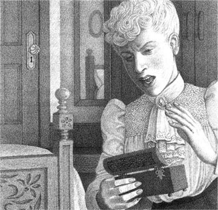
Caption: ______________________________
7．Here are some new titles for the five stories. Which titles go with which stories? Some are better titles than others. Can you say why?
| Rosalie and the Reverend | Take Me to Prison! |
| A Present of Love | Elwyn Runs Away |
| Escape to New York | Little Kiss, Big Mistake |
| How to Go to Prison | Men are All the Same |
| The Unhappy Waitress | A Moment of Change |
| A Poor Christmas | Remembering White Roses |
| A Secret in a Box | Kissing the Wrong Girl |
| Nothing to Give But Love |
8．Here is a new ending for each story. Which do you prefer—the ending in the book or the ending here? Explain why, or write a new ending yourself.
1) Jim finds $ 20 in the street and buys his watch back. Della sells the combs and buys a new hat.
2) The policeman feels sorry for Soapy, and gives him an easy job at the police station.
3) Two months after Elwyn goes back to Denver, his wife takes all his money and runs away to Paris.
4) Now Tildy knows that men like her, she gets a job as an actress. Soon she is very famous.
5) Rosalie and Arthur forget their past lives and marry.
封底
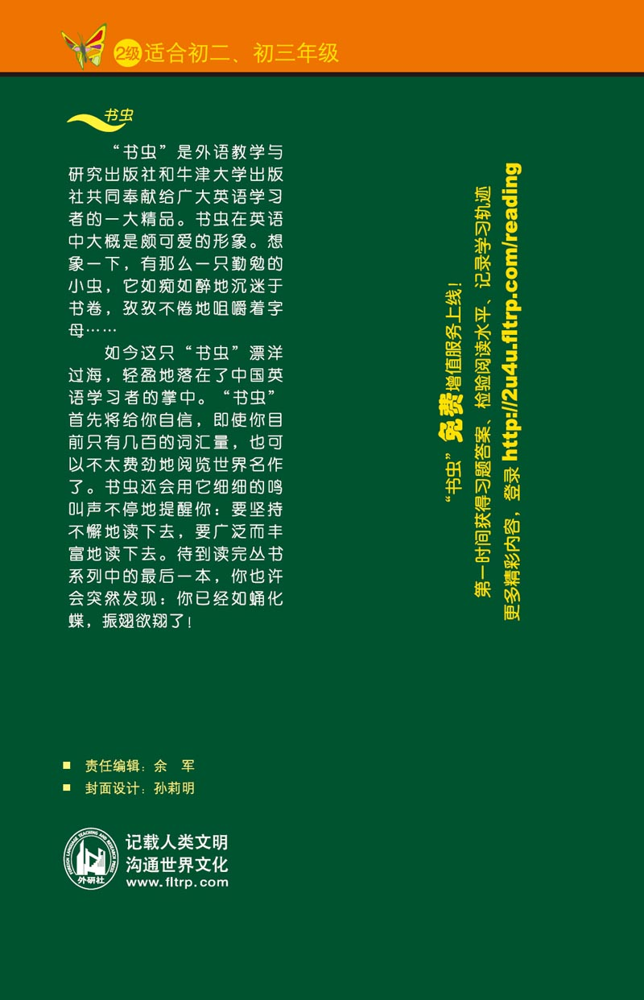